الصحراء الغربية ونهاية بعثة المينورسو
ما تحتاج معرفته
- في 30 أكتوبر استخدمت روسيا حق النقض في مجلس الأمن لإسقاط مشروع قرار أمريكي بشأن الصحراء الغربية وتمديد ولاية بعثة المينورسو، رغم تأييد 11 عضوا له.
- في 1 نوفمبر أعلنت الأمم المتحدة انتهاء ولاية البعثة، وأكد الأمين العام أن ذلك لا يلغي حق شعب الصحراء الغربية في تقرير المصير.
- دعا الديوان الملكي المغربي ثم البرلمان المغربي إلى إنهاء وجود البعثة وسحب الملف من مجلس الأمن.
- تنعقد في 10 نوفمبر جلسة للجمعية العامة للأمم المتحدة لمناقشة استخدام الفيتو.
- 27 أكتوبرواشنطن تعدّل مسودة القرار
- 30 أكتوبرالفيتو الروسي في مجلس الأمن
- 1 نوفمبرانتهاء ولاية المينورسو
- 10 نوفمبرجلسة الجمعية العامة (قادمة)
الخط الزمني
الأحدث أولاًالسبت 14 نوفمبر
- خبر
الوزير الأول الصحراوي: تقليص المساعدات وسحب «مينورسو» لن يحملا الصحراويين على التخلي عن الاستقلال
قال الوزير الأول الصحراوي، بشرايا حمودي بيون، إن تقليص المساعدات الإنسانية ومحاولات سحب بعثة الأمم المتحدة للاستفتاء في الصحراء الغربية «مينورسو» تمثل، وفق وصفه، أدوات ضغط لن تدفع الصحراويين إلى التنازل عن حقهم في تقرير…
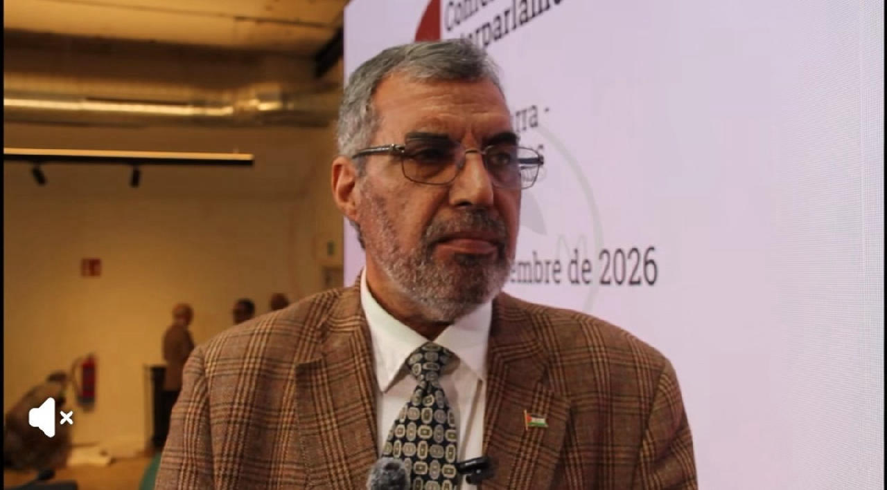
الثلاثاء 10 نوفمبر
- خبر
الجمعية العامة تنهي المرحلة الأولى من نقاش «فيتو الصحراء» وتستأنف الأربعاء
أنهت الجمعية العامة للأمم المتحدة، الثلاثاء، المرحلة الأولى من مناقشتها لاستخدام روسيا حق النقض ضد مشروع قرار كان يرمي إلى تجديد ولاية بعثة الأمم المتحدة للاستفتاء في الصحراء الغربية «مينورسو»، على أن تستأنف الاستماع…
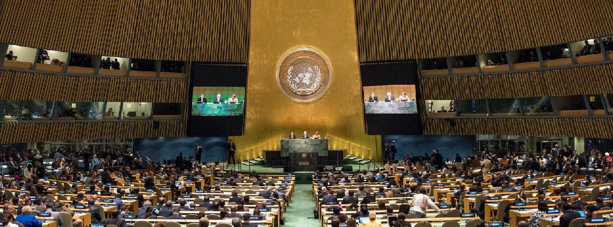
- فيديو
موجز الأخبار من #الرواية #موريتانيا #المغرب #الصحراء_الغربية #الجزائر #تونس #ليبيا #السنغال #مالي
تقرير مصور على قناة الرواية في يوتيوب.
 فيديو
فيديو الاثنين 9 نوفمبر
- خبر
موريتانيا ودبلوماسية الرمال المتحركة وسط ألغام الصحراء
المصدر: أتالايار (Atalayar) – 8 نوفمبر 2026 ماذا يريد المغرب؟ وأين تقف نواكشوط في المشهد الصحراوي الجديد؟ تأتي زيارة وزير الخارجية المغربي عقب انتهاء ولاية بعثة الأمم المتحدة للاستفتاء في الصحراء الغربية «المينورسو»…
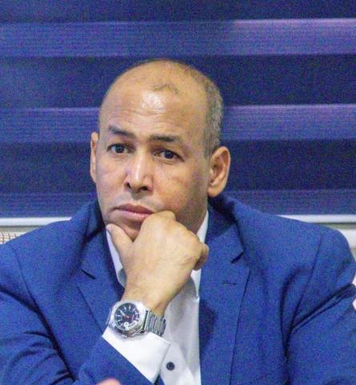
السبت 7 نوفمبر
- فيديو
موجز الأخبار من الرواية#موريتانيا #الصحراء_الغربية #المغرب #تونس #مالي
تقرير مصور على قناة الرواية في يوتيوب.
 فيديو
فيديو - خبر
زيارة غير معلنة لبوريطة إلى نواكشوط
أفادت مصادر صحفية في موريتانيا والمغرب بأن وزير الخارجية المغربي ناصر بوريطة أدى زيارة غير معلنة إلى العاصمة الموريتانية نواكشوط، الجمعة، أجرى خلالها مباحثات مع مسؤولين موريتانيين، في ظل التطورات الأخيرة التي يشهدها ملف…
الخميس 5 نوفمبر
- خبر
لوموند: تعثر الدبلوماسية قد يدفع البوليساريو نحو التصعيد العسكري ضد المغرب
حذر ريكاردو فابياني، مدير مشروع شمال إفريقيا في مجموعة الأزمات الدولية، من أن تعثر المسار الدبلوماسي في الصحراء الغربية قد يعزز نفوذ التيار الداعي إلى التصعيد العسكري داخل جبهة البوليساريو. وقال فابياني، في مقابلة…
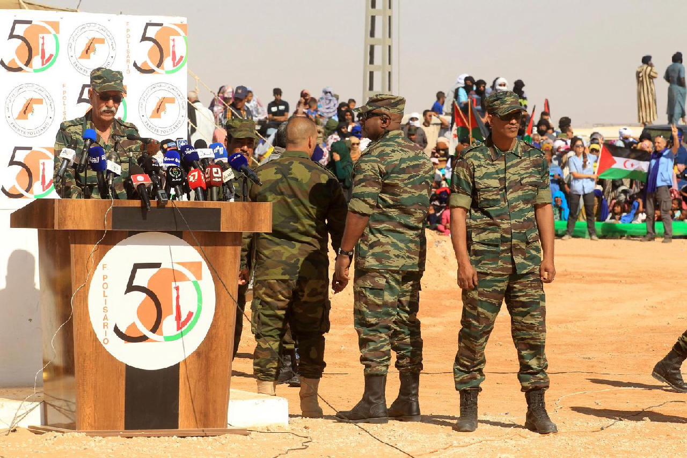
الأربعاء 4 نوفمبر
- خبر
وزير الخارجية الصحراوي يؤكد استعداد البوليساريو للتفاوض مع المغرب
أكد وزير الخارجية والشؤون الإفريقية الصحراوي، محمد يسلم بيسط، اليوم الأربعاء، أن جبهة البوليساريو لا ترفض التفاوض مع المغرب، مجدداً استعدادها للانخراط في مسار سياسي جاد يفضي إلى تسوية عادلة ودائمة للنزاع في الصحراء…
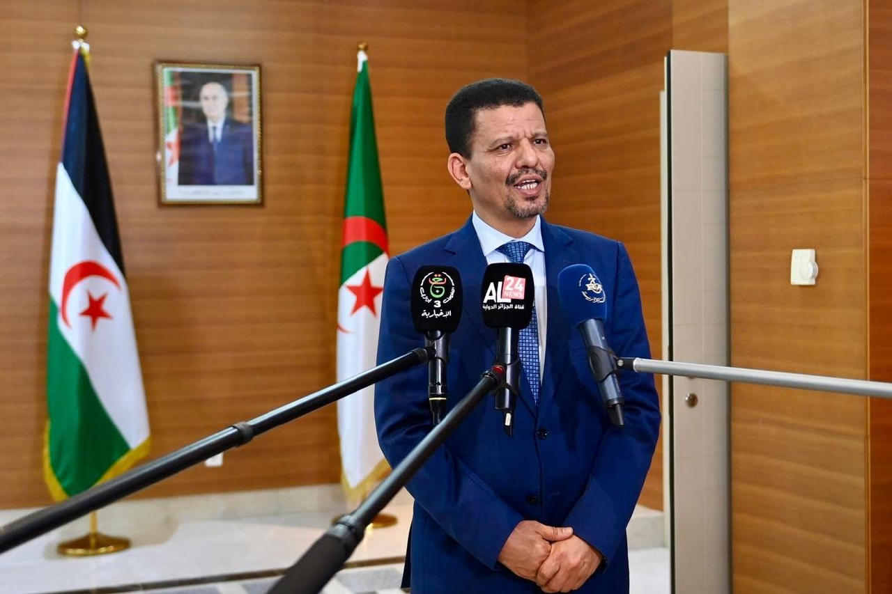
- خبر
المغرب يؤكد استمرار وقف إطلاق النار في الصحراء الغربية رغم انتهاء المينورسو
أكد المغرب استمرار التزامه بوقف إطلاق النار في الصحراء الغربية، رغم انتهاء ولاية بعثة الأمم المتحدة المينورسو دون تمديد من مجلس الأمن. ونقلت رويترز وإيفي، الأربعاء، عن الديوان الملكي المغربي أن هذا الالتزام سيظل قائماً…
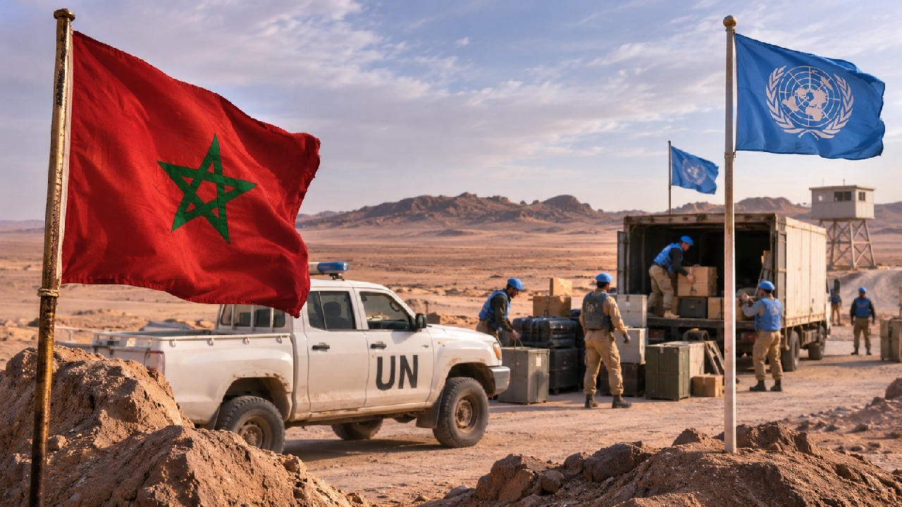
الثلاثاء 3 نوفمبر
- خبر
إلباييس: إنهاء مهمة المينورسو لا يعني خروج ملف الصحراء الغربية من الأمم المتحدة
أفادت صحيفة إلباييس الإسبانية بأن البرلمان المغربي، بغرفتيه، أبدى دعمه لتوجه يرمي إلى إخراج ملف الصحراء الغربية من أروقة الأمم المتحدة، عقب عدم تمديد مهمة بعثة المينورسو في جلسة مجلس الأمن المنعقدة يوم 30 أكتوبر الماضي…
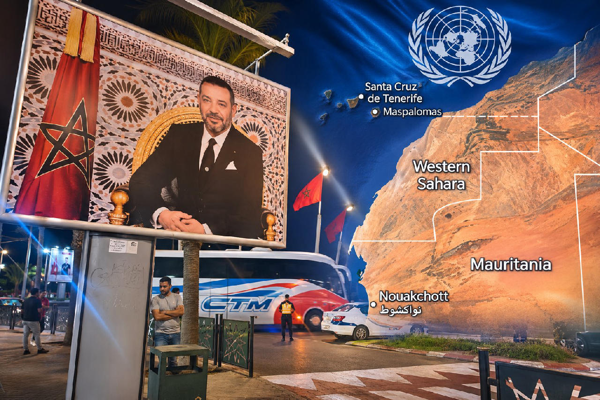
الاثنين 2 نوفمبر
- خبر
البرلمان المغربي يدعو إلى انسحاب المينورسو من الصحراء الغربية
عقد مجلسا النواب والمستشارين المغربيان، الاثنين 2 نوفمبر 2026، جلسة مشتركة في العاصمة الرباط خُصصت لمناقشة التطورات الأخيرة في ملف الصحراء الغربية، عقب إخفاق مجلس الأمن الدولي في تمديد ولاية بعثة الأمم المتحدة للاستفتاء…
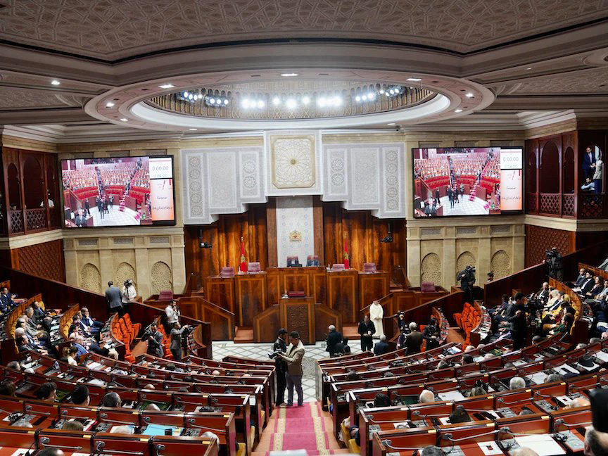
الأحد 1 نوفمبر
- خبر
الأمم المتحدة: انتهاء مهمة المينورسو لا يلغي حق شعب الصحراء الغربية في تقرير المصير
أكد الأمين العام للأمم المتحدة، أنطونيو غوتيريش، الأحد 1 نوفمبر 2026، أن انتهاء مهمة بعثة الأمم المتحدة للاستفتاء في الصحراء الغربية «المينورسو» لا يلغي حق شعب الإقليم غير القابل للتصرف في تقرير المصير، مشددا على…
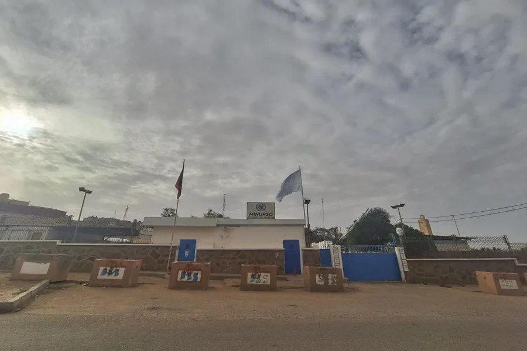
- محطة بارزة: انتهاء الولايةخبر
الأمم المتحدة تعلن انتهاء ولاية بعثة المينورسو في الصحراء الغربية
أعلنت الأمم المتحدة، اليوم الأحد 1 نوفمبر 2026، انتهاء ولاية بعثة الأمم المتحدة للاستفتاء في الصحراء الغربية «المينورسو»، بعد فشل مجلس الأمن في اعتماد قرار جديد لتمديد مهمتها. وجاء انتهاء الولاية عقب جلسة شهدت مواجهة…
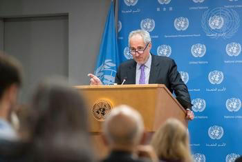
- خبر
الداخلة: اجتماع لشيوخ وأعيان ومنتخبين دعماً للموقف المغربي بشأن الصحراء
احتضن منزل رئيس مجلس جهة الداخلة–وادي الذهب، الخطاط ينجا، اجتماعاً موسعاً ضم شيوخاً وأعياناً ومنتخبين محليين وممثلين عن قبائل صحراوية، خُصص لمناقشة التطورات الأخيرة في ملف الصحراء الغربية، على ضوء بلاغ الديوان الملكي…
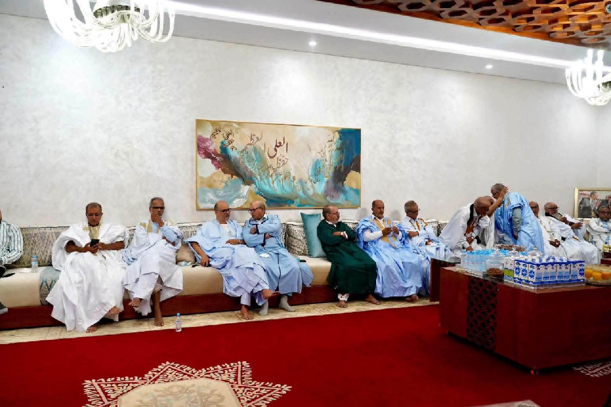
السبت 31 أكتوبر
- فيديو
روسيا تستخدم الفيتو ضد مشروع قرار أمريكي بشأن الصحراء الغربية
تقرير مصور على قناة الرواية في يوتيوب.
 فيديو
فيديو - خبر
سجال حاد في مجلس الأمن بين القوى الكبرى والجزائر والمغرب بشأن الصحراء الغربية
شهد مجلس الأمن الدولي، خلال جلسة التصويت على تمديد ولاية بعثة المينورسو، يوم 30 أكتوبر 2026، سجالا دبلوماسيا حادا بين الدول الخمس الدائمة العضوية، والجزائر والمغرب، كشف عمق الخلاف بشأن مستقبل النزاع في الصحراء الغربية…
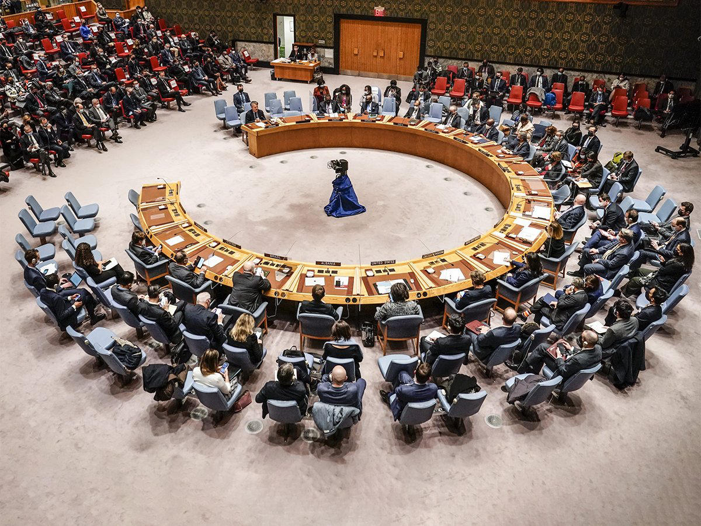
الجمعة 30 أكتوبر
- خبر
الديوان الملكي المغربي يدعو إلى إنهاء وجود المينورسو وسحب ملف الصحراء من مجلس الأمن
دعا الديوان الملكي المغربي إلى إنهاء وجود بعثة الأمم المتحدة للاستفتاء في الصحراء الغربية (المينورسو)، وسحب ملف الصحراء من جدول أعمال مجلس الأمن الدولي، عقب فشل المجلس، الجمعة 30 أكتوبر 2026، في تمديد ولاية البعثة…
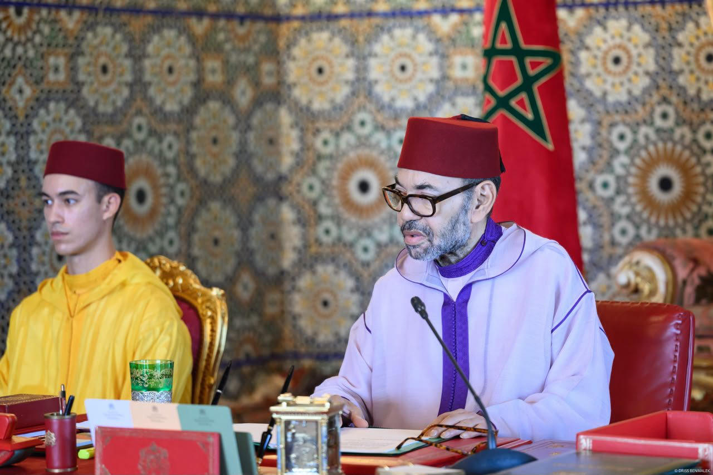
- محطة بارزة: الفيتو الروسيخبر
روسيا تستخدم الفيتو لإسقاط مشروع القرار الأمريكي بشأن الصحراء الغربية
استخدمت روسيا، اليوم الجمعة، حق النقض (الفيتو) في مجلس الأمن الدولي، لإسقاط مشروع قرار أمريكي بشأن الصحراء الغربية، رغم حصوله على تأييد 11 عضوًا من أعضاء المجلس، مقابل معارضة روسيا وامتناع ثلاثة أعضاء عن التصويت. وكان…
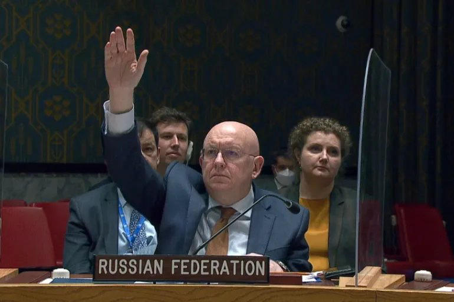
- خبر
روسيا توزع مشروع قرار بديلا للمشروع الأمريكي بشأن الصحراء الغربية والمينورسو
أكد موقع «Security Council Report» المتخصص في متابعة أعمال مجلس الأمن أن روسيا وزعت، صباح الجمعة 30 أكتوبر 2026، مشروع قرار بديلا بشأن بعثة الأمم المتحدة للاستفتاء في الصحراء الغربية (المينورسو)، وأدرجته في الصيغة…
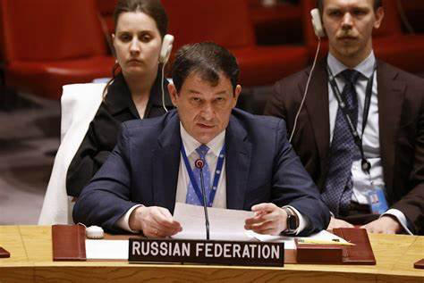
- خبر
مجلس الأمن يصوت الليلة على مشروع قرار أمريكي معدل بشأن الصحراء الغربية
يستعد مجلس الأمن الدولي للتصويت، مساء الجمعة، على مشروع قرار أمريكي بشأن الصحراء الغربية وتجديد ولاية بعثة الأمم المتحدة «المينورسو»، وسط خلافات بين الدول الأعضاء حول مستقبل البعثة والإطار السياسي لتسوية النزاع. ويتضمن…
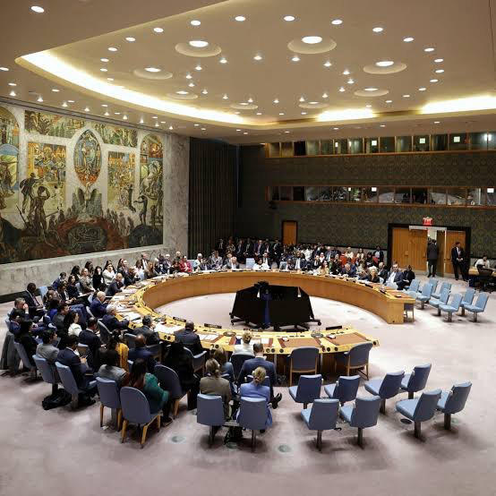
الخميس 29 أكتوبر
- خبر
روسيا تؤيد تمديد ولاية المينورسو وتؤجل حسم موقفها من مشروع القرار الأمريكي
أعلنت روسيا تأييدها تمديد ولاية بعثة الأمم المتحدة للاستفتاء في الصحراء الغربية «المينورسو»، دون أن تحسم موقفها النهائي من مشروع القرار الأمريكي المطروح على مجلس الأمن الدولي. ونقلت وسائل إعلام، الخميس 29 أكتوبر، عن…
الثلاثاء 27 أكتوبر
- خبر
واشنطن تعدل مسودة قرار الصحراء الغربية وتعيد الإشارة إلى تقرير المصير
أدخلت الولايات المتحدة تعديلات جديدة على مشروع القرار الذي قدمته إلى مجلس الأمن الدولي بشأن الصحراء الغربية، شملت التراجع عن بعض البنود المتعلقة بمستقبل بعثة الأمم المتحدة «المينورسو»، وإعادة الإشارة الصريحة إلى حق…
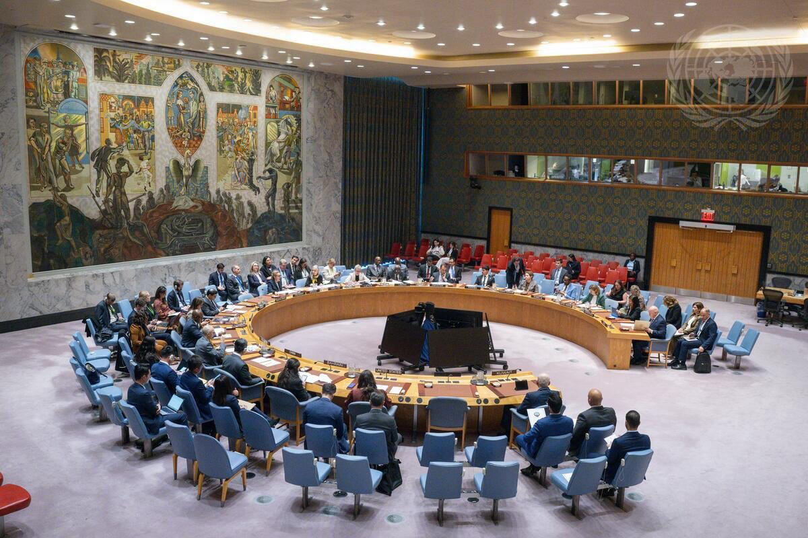
بداية الملف: 27 أكتوبر 2026